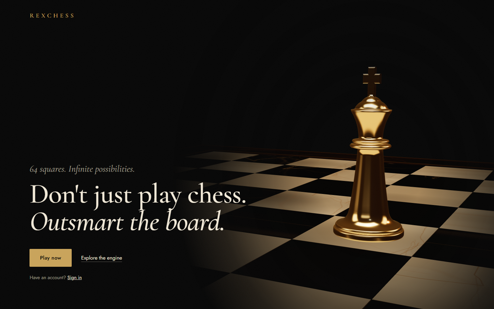
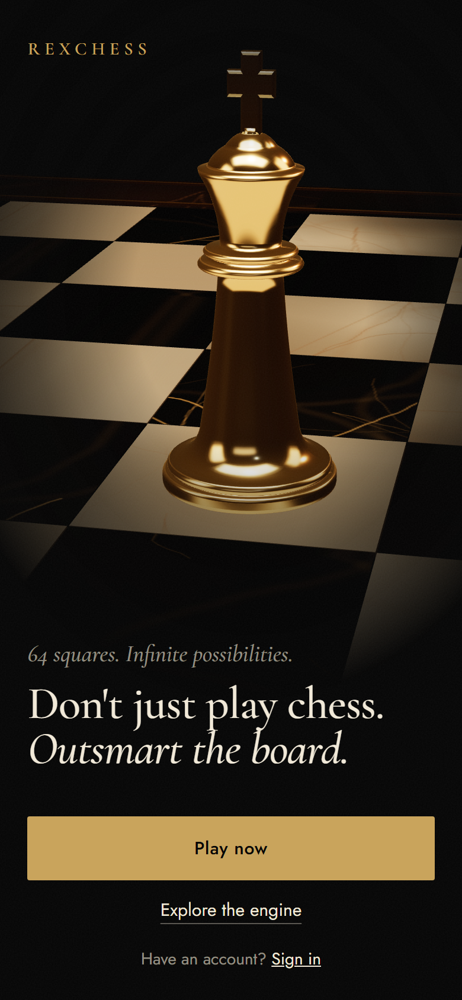

Hero style gate
The hero's final frame as a static mockup, at 1440 and 390 px. The board and king are stills captured from the app's own 3D scene. The light pool is a page mask for now; the directed mode replaces it with a real spotlight. Open the live mockup and resize it.
Mockup


References

apple.com/airpods-pro
One object owns the upper two-thirds; the headline is anchored low-left. Here the object is the king under its own light, and the headline sits where the light doesn't reach.

The Pudding, "Are Pop Lyrics Getting More Repetitive?"
Each step changes one thing in the graphic, and the labels sit on the data ("Avg. song", "Cheap Thrills"), not in a legend. In scene 4, each move's caption is written on the board at its destination square.

lusion.co
Black with saturated blue on glossy 3D objects is what "tech studio" looks like now. Our blue stays a thin stroke that carries engine data, never a surface.

chess.com
Flat green board, "#1 site", "250+ million players", one green button. We use no flat board, no audience metric, no green.

lichess.org
A grid of time-control cards and live player counts. We use no card grid and no counts.
Dropped: igloo.inc (the headless browser captured only its grey loading frame, so nothing is cited from it). The awwwards gallery scraper failed (its markup changed), so these were picked by hand.
Moodboard

- Palette: near-black ground with one lit object; the colour lives in the material under the light.
- Light: one hard source from above, fast falloff, no fill, no rim glow.
- Taken: 06 (the object small in a tall dark frame, under its own cone) for the finale; 12 (the subject cut by the frame edge) for scene 3.
- Avoid: 09 (neon on sculpture), 04 (gold ring and marble plinth), the brown backdrops of 14 and 24.